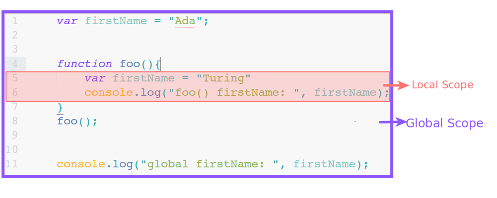

Functions and Function Expressions
Created for
Created by
Дефиниция на функция (Function Definition)
Дефиниция на функция (Function Definition)
Вариант 1: Function Declarations
function <име>( <списък параметри> ) {
<тяло на функцията>
}
<име>- Име на функцията, съобразено с правилата за идентификатори в JS. (tool: variable name validator)
<списък параметри>- Нула или повече параметъра разделени със запетая. Кръглите скоби са задължителни дори и ако функцията няма параметри.
<тяло на функцията>- Изрази, разделени с '
;' - Забележете, че след декларацията на функцията не се слага ';'
Function Declarations - Примери
//функцията няма параметри
function signOutMsg(){
confirm("Прекратяване на сесията?");
}
// функцията декларира 2 параметъра
function sum(x, y){
console.log( x + y );
}
Вариант 2: Function Expression
var functionVar = function(<списък параметри>){
<тяло на функцията>
};
- Тук се създава анонимна функция, която е достъпна чрез променливата
functionVarв която сме я съхранили. - Реално, се извършват две действия:
- 1. var functionVar = undefined // compile time
- 2. functionVar = function(...){...}; // run time
- Тъй като тук дефинираме функцията чрез израз (оператора за присвояване), то задължително трябва да сложим ';' в края.
Параметри на функция
- Параметрите на една функция са локални променливи които не декларираме експлицитно с
varилиlet. - Имената на параметри трябва да отговарят на правилата за именуване на променливи в JavaScript.
- Параметрите получават стойност при извикването (изпълнението) на функцията.
Function Declaration vs. Function Expression
- Когато дефинираме функция чрез декларация (Вариант 1) то декларацията на функцията винаги се извършва в началото на scope.
// foo() вече е декларирана и JS знае, че е функция!
console.log( foo() );
function foo() {
return "I am foo() and I work!";
}
Function Declaration vs. Function Expression
// foo() вече е декларирана, но JS не знае все още че е функция!
console.log( foo() ); //TypeError: foo is not a function
var foo = function(){
return "I am foo() and I work!";
}
извикване на функция (Function Invocation)
Function Invocation
- За да се изпълнят действията зададени в една функция, то тя трябва да се "извика".
- Синоними:
- Извикване, стартиране, изпълнение на функция
- Function call, invocation, execution.
name(<списък аргументи>);
- name
- името на функцията, която желаем да изпълним.
- <списък аргументи>
- стойности, които автоматично ще се подадат на параметрите.
Пример
function greet(userName){
console.log(`Hello ${userName}. Nice to see you.`);
}
// едва тук ще се изпълнят действията, дефинирани във фунцкцията:
greet("Ada");
greet("John");
Предаване на аргументи
- съпоставянето на стойности между параметър и аргумент е в зависимост от последователността на изписване. Тоест - първия параметър приема стойността на първия аргумент, втория параметър - на втория аргумент и т.н
Предаване на аргументи

- x = 2
- y = 3
Предаване на аргументи
// декларация на функцията sum():
function sum(x, y){
// var x = 2, y = 3;
console.log( x + y);
}
// извикване на функцията sum():
sum(2, 3); // 5
при предаването на стойности на параметрите, това което JS интерпретатора прави, е да създаде локални променливи и да им присвои стойностите зададени в аргументите.
Особености
- Ако борят на параметрите не съответства на броя на аргументите, JavaScript не връща грешка!
function sum(x, y){
// var x = 2, y = undefined;
console.log( x + y);
}
sum(2); // undefined
function sum(x){
// var x = 2;
console.log( x ); // 2
console.log( x + y); // ReferenceError: y is not defined
// ако не използваме y във функцията, няма да има грешка.
}
sum(2, 3);
Return Statement
Return Statement
- Всяка функция в JavaScript връща стойност.
- На мястото на извикването на функцията ще се подаде връщаната от функцията стойност.
- За да определим каква да бъде връщаната стойност използваме оператора
return - Ако във функцията не сме използвали оператора
return, то функцията връщаundefined!
function f(){
// some code
return <израз>; // exit
}
let res = f();
- <израз> трябва да бъде изчислим.
- Именно изчислената стойност ще се замести на мястото на извикване на функцията
- След оператора
returnсе излиза от тялото на функцията. Тоест, нито един израз във функцията, следreturnняма да се изпълни!
Example
function f(){
console.log("start");
return true;
console.log("end"); // никога няма да се изпълни!
}
f();
// "start"
Пример
function giveMeAnswer(){
console.log("and the answer is...");
return 42;
}
// giveMeAnswer() ще се замести с 42:
console.log( giveMeAnswer() );
// and the answer is...
// 42
Обхват на променливите (Variables Scope)
Обхват на променливите (Variables Scope)
Въведение
- Обхват (scope) на една променлива наричаме областта от кода, в която може да достъпим дадената променлива.
- В JavaScript различаваме 2 вида scope:
- global
- local
Local Scope
- Тялото на всяка една функция формира local scope.
- Всяка променлива, декларирана с var или let/const, в тялото на една функция се нарича локална и е видима само в тялото на функцията (не може да бъде достъпена извън тялото на функцията)
function f(){
// firstName e локална за f():
var firstName = "ada";
console.log( firstName );
}
f(); // "ada"
console.log( firstName ); // ReferenceError: firstName is not defined
Global Scope
- Когато скрипта се изпълнява от браузър, глобалният обхват (global scope) е всичкия код принадлежащ към дадената страница. Ако имаме няколко включени в дадена страница, то всички те формират global scope.
- Променлива, която не е декларирана в тялото на която и да е функция, се нарича глобална и може да бъде достъпена от всяко едно място в global scope.
Global Scope
// x е глобална променлива
var x = 5;
<body>
<!-- ... -->
<script type="text/javascript" src="lib.js"></script>
<script type="text/javascript">
console.log(`x = ${x}`)
// x = 5
</script>
</body>
Shadowing
- Локални променливи, чието име съвпада с променливи от външния scope, припокриват, засенчват (shadowing) външните променливи в рамките на локалния scope.
Shadowing
var firstName = "Ada";
function foo(){
var firstName = "Turing"
console.log("foo() firstName: ", firstName);
}
foo(); // "Turing"
console.log("global firstName: ", firstName); // "Ada"
Локалната променлива firstName не променя стойността на глобалната променлива firstName!
За JavaScript това са 2 отделни променливи!
Внимавайте за следната възможна грешка:
var firstName = "Ada";
function foo(){
// тук променяме глобалната променлива!!!
firstName = "Turing"
console.log("foo() firstName: ", firstName);
}
foo();
console.log("global firstName: ", firstName);
firstName в тялото на функцията НЕ Е декларирана чрез var и така тя се счита за глобална променлива!
Анонимни функции (Anonymous functions)
Анонимни функции
- Функция, която няма име се нарича анонимна функция!
- Обикновено, анонимните функции се използват като стойности: на променливи, на параметри, в return изрази.
Анонимна функция като стойност на променлива (function expression)
var a = function(){
console.log("I am in a!");
}
a();
// "I am in a!"
Внимавайте за следната възможна грешка:
var a = function b(){
console.log("I am in b!");
}
b(); // ReferenceError: b is not defined
IIFE
- Единственият начин да се изпълни анонимна функция, която не е присвоена на променлива, е чрез конструкта, наречен IIFE (Immediately Invoked Function Expression)
(f(){})()
(function(){
console.log("I am in nowhere, but I exist and work!");
})();
// "I am in nowhere, but I exist and work"
- Обърнете внимание на кръглите скоби с който заграждаме декларацията на функцията (за да я превърнем в изпълним израз), както и на скобите след това, за да изпълним този израз.
IIFE
- IIFE намира приложение за създаване на local scope в даден скрипт.
(function(){
// нито една от променливите създадени чрез var или let, няма да бъде видима извън тази функция:
var x = 42;
console.log(`x in IIFE.js: ${x}`);
})()
Functions as first-class citizens
Functions as first-class citizens
From its creation back in 1995, JavaScript supports function as first-class citizens (objects)
JavaScript's C-like syntax, including curly braces and the clunky for statement, makes it appear to be an ordinary procedural language. This is misleading because JavaScript has more in common with functional languages like Lisp or Scheme than with C or JavaJavaScript: The World's Most Misunderstood Programming Language (Douglas Crockford)
- What that means?
- A function can be treated as object, expression or statement.
- A function can be passed as argument to other functions.
- A function can be the return value of the
returnoperator.
example
function passed as argument to other functions.
var greeting = function(){
alert("Welcome");
}
setTimeout(greeting, 4000);
example
function as return value
var greeting = function(name){
return function(){
alert("Welcome, "+ name);
}
}
setTimeout(greeting("iva"), 4000);
example
var sum = function(x){
return function(y){
return x+y;
}
}
console.log( "sum:", sum(2)(3) );
Pros and Cons
- Pros
- The new (ES2015) arrow functions syntax make JavaScript a language suited for lamdba-calculus (functional programming paradigm)
- Cons
- Not intuitive for persons used with classical procedural languages.
Immediately-invoked function expressions (IIFE)
Immediately-invoked function expressions (IIFE)
IIFEImmediatelyInvokedFunctionExpression
When a function will be used only once (usually - to create a local scope), we do not need to define it first. It's more efficient to invoke it as an anonymous function
( function(){} )();
function(){}is an anonymous function declaration!( function(){} )is an anonymous function expression!- We can only invoke function expressions.
(function(x,y){
console.log( x+y );
})(2,3);
is the same as
(function(x,y){
console.log( x+y );
}(2,3));
Closures
Closures
- Allows a function which is executed outside its lexical scope, to preserve the values of scoped variables
function outer(){
var x = 5;
function inner(){
console.log(x);
}
return inner;
}
var f = outer();
f(); // f can access the local x !
Common problem: "closures in loops"
var cats = [];
for (var i = 0; i < 3; i++) {
cats[i] = function(){
console.log(`Cat ${i} is ready!`);
}
}
cats[0](); //Cat 3 is ready!
cats[1](); //Cat 3 is ready!
cats[2](); //Cat 3 is ready!
the value of 'i' in the cats[i] function body is determined when the function is invoked!
"closures in loops" - IIFE solution
var cats = [];
for (var i = 0; i < 3; i++) {
(function(i){
cats[i] = function(){
console.log(`Cat ${i} is ready!`);
}
})(i)
}
cats[0](); //Cat 0 is ready!
cats[1](); //Cat 1 is ready!
cats[2](); //Cat 2 is ready!
"closures in loops" - Factory solution
var cats = [];
function catMaker(i){
return function(){
console.log(`Cat ${i} is ready!`);
}
}
for (var i = 0; i < 3; i++) {
cats[i] = catMaker(i);
}
cats[0](); //Cat 0 is ready!
cats[1](); //Cat 1 is ready!
cats[2](); //Cat 2 is ready!
"closures in loops - timeout Problem"
var colors = ["red", "green", "blue"];
for (var i = 0; i < colors.length; i++) {
setTimeout(function(){
changeBG("box", colors[i]);
}, 1000)
}
function changeBG(id, color){
var node = document.getElementById(id);
node.style.background = color;
}
"closures in loops - timeout IIFE fix"
var colors = ["red", "green", "blue"];
for (var i = 0; i < colors.length; i++) {
(function(i){
setTimeout(function(){
changeBG("box", colors[i]);
}, 1000*i)
})(i);
}
function changeBG(id, color){
var node = document.getElementById(id);
node.style.background = color;
}
setTimeout() is invoked immediately 3 times. The delay is for the inner function. If we pass same delay, they will be invoked simultaneously after the delay. So, we need to change the delay, as well, i.e. i*1000
"closures in loops - timeout separate call fix"
var colors = ["red", "green", "blue"];
for (var i = 0; i < colors.length; i++) {
doTimeout(i);
}
function doTimeout(i){
setTimeout(function(){
changeBG("box", colors[i]);
}, i*1000)
}
function changeBG(id, color){
var node = document.getElementById(id);
node.style.background = color;
}
Test it!
Recursion
Recursion
- A recursive function is a function which calls itself (directly or indirectly)
- Each call creates a separate function stack!
- Recursion can be endless if we do not take care when it has to stop!

Recursive Factorial Calculation
function factorial(n)
{
if (n == 1) {
// f(1) = 1 => the END condition
return 1;
}else {
// f(n) = n * f(n-1)
return (n * factorial(n - 1));
}
}
factorial(3);
Recursive Power Calculation
function power(base, exponent) {
if (exponent == 0)
return 1;
else
return base * power(base, exponent - 1);
}
console.log(power(2, 10));
Traversing the DOM
Resources
Resources
Readings
These slides are based on
customised version of
framework